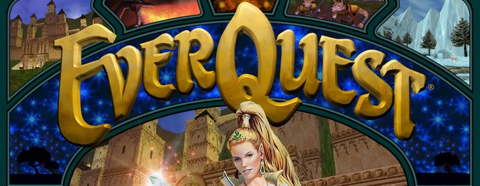

Narogg's Place
EQ Recipe : Bazu Breastplate of Flames
Click Item to see expanding info
1 x Bazu Breastplate
- Crafted
- 1 x Smithy Hammer
- 1 x Pristine Bazu Skin
- Dropped
- Wall of Slaughter - a bazu thrasher
- 1 x Chainmail Tunic Pattern
- 4 x Bazu Blood>
- Dropped
- Wall of Slaughter - a bazu basher or a bazu thrasher
4 x Pyrilen Flame
- Dropped
- Riftseekers' Sanctum
- a pyrilen cinderhealer
- a pyrilen fireblade
- a pyrilen flamedouser
- a pyrilen flamemistress
- a pyrilen flameshard
- a pyrilen guard
- a pyrilen sirenscorcher
- a pyrilen slayfire
- a pyrilen spinesinge
- Balancer Relik
- Pyrilen Researcher
1 x Smithy Hammer